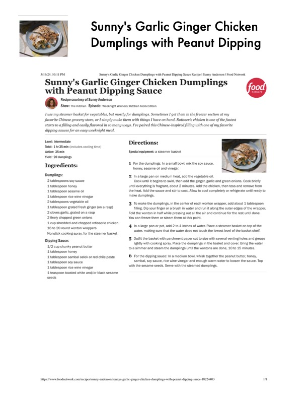

Sunny's Garlic Ginger Chicken

Original cookbook page 591
Ingredients
- Dumplings:
- 2 tablespoons soy sauce
- 11 tablespoon honey
- 1L tablespoon sesame oil
- 1L tablespoon rice wine vinegar
- 2 tablespoons vegetable oil
- L tablespoon grated fresh ginger (on a rasp)
- 2 cloves garlic, grated on a rasp
- 2 finely chopped green onions
- 11 cup shredded and chopped rotisserie chicken
- 16 to 20 round wonton wrappers
- Nonstick cooking spray, for the steamer basket
- Dipping Sauce:
- 1/2 cup chunky peanut butter
- 1 tablespoon honey
- 1L tablespoon sambal oelek or red chile paste
- 1 tablespoon soy sauce
- 11 teaspoon toasted white and/or black sesame
- seeds
Instructions
- Special equipment: a steamer basket
- For the dumplings: In a small bowl, mix the soy sauce, honey, sesame oil and vinegar. \
- Ina large pan on medium heat, add the vegetable oil Cook until it begins to swirl, then add the ginger, garlic and g until everything is fragrant, about 2 minutes. Add the chicken, th the heat. Add the sauce and stir to coat. Allow to cool completely make dumplings.
- To make the dumplings, in the center of each wonton wrappe filling, Dip your finger or a brush in water and run it along the Fold the wonton in half while pressing out all the air and continu You can freeze them or steam them at this point. 4, Ina large pan or pot, add 2 to 4 inches of water, Place a stee water, making sure that the water does not touch the lowest,
- Outfit the basket with parchment paper cut to size with sever lightly with cooking spray. Place the dumplings in the basket. toa simmer and steam the dumplings until the wontons are don
Recipe #591 from collection